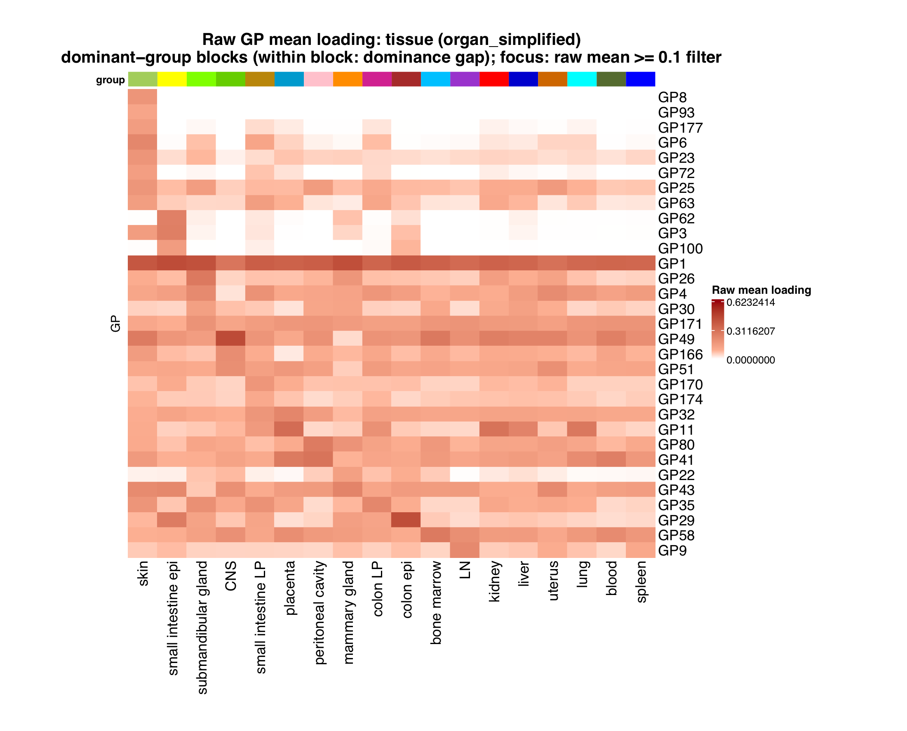
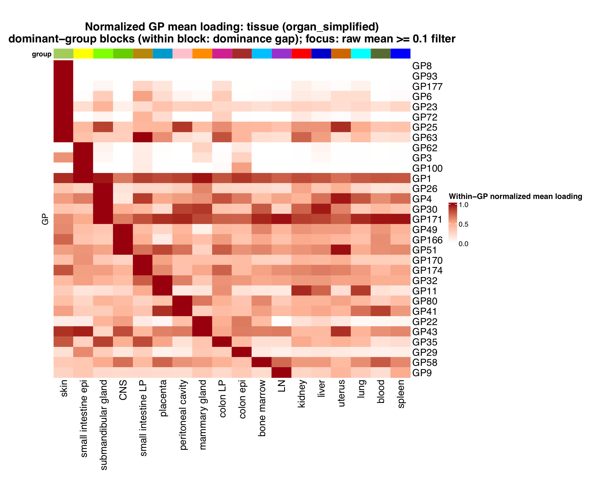
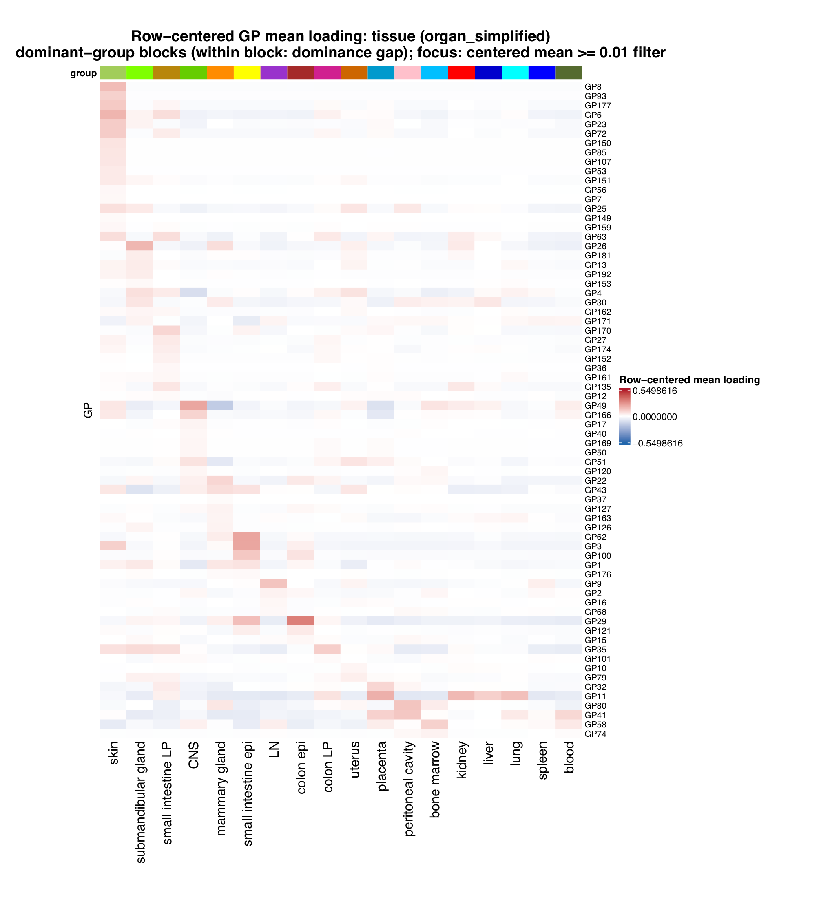
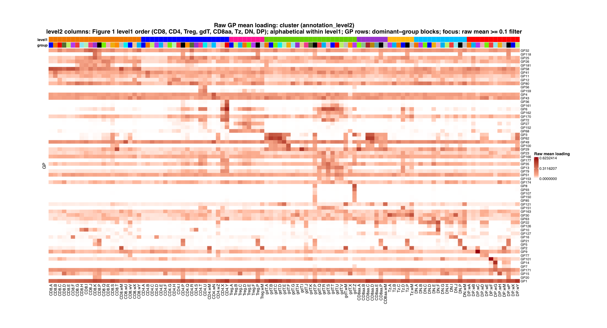
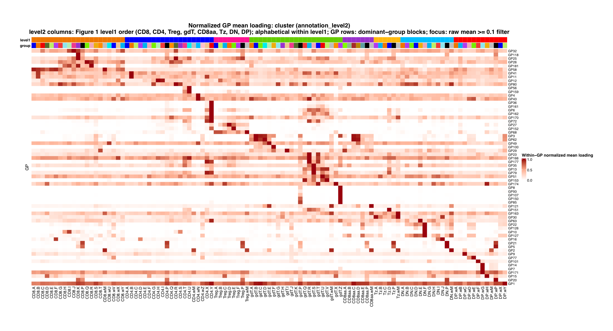
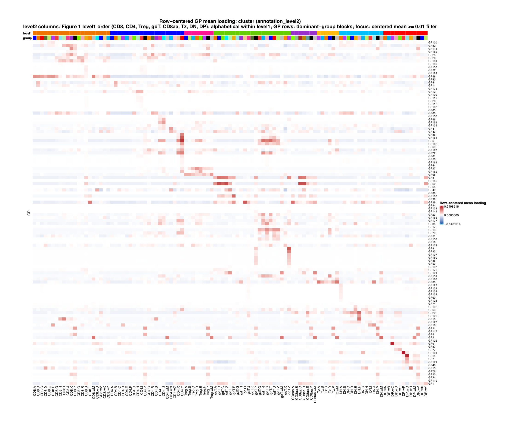

Last updated: 2026-07-14
Checks: 7 0
Knit directory:
figs4_publish_clean/analysis/
This reproducible R Markdown analysis was created with workflowr (version 1.7.2). The Checks tab describes the reproducibility checks that were applied when the results were created. The Past versions tab lists the development history.
Great! Since the R Markdown file has been committed to the Git repository, you know the exact version of the code that produced these results.
Great job! The global environment was empty. Objects defined in the global environment can affect the analysis in your R Markdown file in unknown ways. For reproduciblity it’s best to always run the code in an empty environment.
The command set.seed(1) was run prior to running the
code in the R Markdown file. Setting a seed ensures that any results
that rely on randomness, e.g. subsampling or permutations, are
reproducible.
Great job! Recording the operating system, R version, and package versions is critical for reproducibility.
Nice! There were no cached chunks for this analysis, so you can be confident that you successfully produced the results during this run.
Great job! Using relative paths to the files within your workflowr project makes it easier to run your code on other machines.
Great! You are using Git for version control. Tracking code development and connecting the code version to the results is critical for reproducibility.
The results in this page were generated with repository version db2469b. See the Past versions tab to see a history of the changes made to the R Markdown and HTML files.
Note that you need to be careful to ensure that all relevant files for
the analysis have been committed to Git prior to generating the results
(you can use wflow_publish or
wflow_git_commit). workflowr only checks the R Markdown
file, but you know if there are other scripts or data files that it
depends on. Below is the status of the Git repository when the results
were generated:
working directory clean
Note that any generated files, e.g. HTML, png, CSS, etc., are not included in this status report because it is ok for generated content to have uncommitted changes.
These are the previous versions of the repository in which changes were
made to the R Markdown (analysis/FigureS4.Rmd) and HTML
(docs/FigureS4.html) files. If you’ve configured a remote
Git repository (see ?wflow_git_remote), click on the
hyperlinks in the table below to view the files as they were in that
past version.
| File | Version | Author | Date | Message |
|---|---|---|---|---|
| Rmd | db2469b | Ziang Zhang | 2026-07-14 | Prepare Figure S4 centered heatmaps |
| html | db2469b | Ziang Zhang | 2026-07-14 | Prepare Figure S4 centered heatmaps |
| Rmd | c344aaa | Ziang Zhang | 2026-07-13 | Add Figure S4 mean-loading heatmaps |
| html | c344aaa | Ziang Zhang | 2026-07-13 | Add Figure S4 mean-loading heatmaps |
Figure S4 is produced by script/FigureS4.R.
The page provides raw, within-GP-normalized, and row-centered
alternatives as clickable tabs for each panel; no display choice has
been finalized. The code is shown for reference and is not re-executed
on this page. All panels use healthy non-thymocyte cells
(condition_broad == "healthy" and
annotation_level1 != "thymocyte").
# Figure S4. Healthy non-thymocyte GP mean-loading heatmaps.
#
# Panel S4a: tissue (organ_simplified).
# Panel S4b: cluster (annotation_level2).
#
# Raw and within-GP normalized alternatives use the same raw-mean-filtered
# GP/group set. The row-centered alternatives are independently filtered from
# their full centered matrices using positive centered mean loading >= 0.01.
# Level2 columns follow Figure 1's level1 order, with level2 labels
# alphabetized within each level1 block.
suppressPackageStartupMessages({
library(ComplexHeatmap)
library(circlize)
library(grid)
library(ZemmourLib)
})
if (!file.exists("code/R/setup_data.R")) {
stop("Run this script from the immgenT-GP-analysis repository root.")
}
source("code/R/setup_data.R")
figure_path <- "figures/generated/Figure S4"
dir.create(figure_path, recursive = TRUE, showWarnings = FALSE)
mean_loading_by_group <- function(L_mat, labels) {
if (length(labels) != nrow(L_mat) || anyNA(labels) || any(labels == "")) {
stop("Group labels must be present for every retained cell.")
}
labels <- droplevels(factor(as.character(labels)))
group_sums <- rowsum(L_mat, group = labels, reorder = TRUE)
group_counts <- as.integer(table(labels)[rownames(group_sums)])
list(
matrix = t(sweep(group_sums, 1L, group_counts, "/")),
counts = data.frame(group = rownames(group_sums), n_cells = group_counts)
)
}
normalize_by_gp_max <- function(mean_matrix) {
row_max <- apply(mean_matrix, 1L, max)
if (any(!is.finite(row_max)) || any(row_max <= 0)) {
stop("Every GP must have a finite positive maximum mean loading.")
}
sweep(mean_matrix, 1L, row_max, "/")
}
center_by_gp_mean <- function(mean_matrix) {
sweep(mean_matrix, 1L, rowMeans(mean_matrix), "-")
}
filter_raw_mean_matrix <- function(raw_matrix, raw_mean_cutoff) {
keep_gp <- rowSums(raw_matrix >= raw_mean_cutoff) > 0L
filtered_raw <- raw_matrix[keep_gp, , drop = FALSE]
keep_group <- colSums(filtered_raw >= raw_mean_cutoff) > 0L
filtered_raw <- filtered_raw[, keep_group, drop = FALSE]
if (nrow(filtered_raw) == 0L || ncol(filtered_raw) < 2L) {
stop("The raw-mean filter must retain at least one GP and two groups.")
}
filtered_raw
}
filter_centered_mean_matrix <- function(centered_matrix, centered_mean_cutoff) {
supported_entries <- centered_matrix >= centered_mean_cutoff
keep_gp <- rowSums(supported_entries) > 0L
keep_group <- colSums(supported_entries[keep_gp, , drop = FALSE]) > 0L
filtered_centered <- centered_matrix[keep_gp, keep_group, drop = FALSE]
if (nrow(filtered_centered) == 0L || ncol(filtered_centered) < 2L) {
stop("The centered-mean filter must retain at least one GP and two groups.")
}
filtered_centered
}
dominant_group_order <- function(raw_mean_matrix, fixed_column_order = NULL) {
gp_number <- suppressWarnings(as.integer(sub("^GP", "", rownames(raw_mean_matrix))))
if (ncol(raw_mean_matrix) < 2L || anyNA(gp_number)) {
stop("Dominant-group ordering requires at least two groups and GP<number> row names.")
}
dominant_index <- max.col(raw_mean_matrix, ties.method = "first")
dominant_mean <- raw_mean_matrix[cbind(seq_len(nrow(raw_mean_matrix)), dominant_index)]
second_mean <- apply(raw_mean_matrix, 1L, function(values) sort(values, decreasing = TRUE)[2L])
dominance_gap <- dominant_mean - second_mean
if (is.null(fixed_column_order)) {
dominant_gp_count <- tabulate(dominant_index, nbins = ncol(raw_mean_matrix))
column_order <- order(-dominant_gp_count, -colMeans(raw_mean_matrix), colnames(raw_mean_matrix))
} else {
if (
length(fixed_column_order) != ncol(raw_mean_matrix) ||
!identical(sort(fixed_column_order), seq_len(ncol(raw_mean_matrix)))
) {
stop("The fixed column order must be a complete permutation.")
}
column_order <- fixed_column_order
}
dominant_group_position <- match(dominant_index, column_order)
row_order <- order(dominant_group_position, -dominance_gap, -dominant_mean, gp_number)
if (any(diff(dominant_group_position[row_order]) < 0L)) {
stop("Dominant-group blocks are not monotone after ordering.")
}
list(row_order = row_order, column_order = column_order)
}
level2_to_level1_map <- function(meta, groups, level1_order) {
mapping <- unique(data.frame(
group = as.character(meta$annotation_level2),
level1 = as.character(meta$annotation_level1),
stringsAsFactors = FALSE
))
if (anyDuplicated(mapping$group)) {
stop("Each annotation_level2 label must map to exactly one annotation_level1 label.")
}
group_level1 <- mapping$level1[match(groups, mapping$group)]
names(group_level1) <- groups
if (anyNA(group_level1) || any(!group_level1 %in% level1_order)) {
stop("Every displayed level2 group must map to the Figure 1 level1 order.")
}
group_level1
}
level2_column_order <- function(groups, group_level1, level1_order) {
order(match(group_level1[groups], level1_order), groups)
}
palette_for_groups <- function(groups, palette, label) {
missing <- setdiff(groups, names(palette))
if (length(missing) > 0L) {
stop("The canonical ", label, " palette lacks: ", paste(missing, collapse = ", "))
}
palette[groups]
}
render_heatmap <- function(
matrix,
group_palette,
group_label,
scale_label,
filename,
row_order,
column_order,
raw_mean_cutoff,
raw_limit = NULL,
centered_limit = NULL,
group_level1 = NULL,
level1_palette = NULL,
order_description = NULL
) {
if (
length(row_order) != nrow(matrix) || length(column_order) != ncol(matrix) ||
!identical(sort(row_order), seq_len(nrow(matrix))) ||
!identical(sort(column_order), seq_len(ncol(matrix)))
) {
stop("Fixed row and column orders must be complete permutations.")
}
if (identical(scale_label, "Raw mean loading")) {
color_fun <- circlize::colorRamp2(
c(0, raw_limit * 0.15, raw_limit),
c("#FFFFFF", "#FCAE91", "#99000D")
)
legend_at <- c(0, raw_limit / 2, raw_limit)
} else if (identical(scale_label, "Within-GP normalized mean loading")) {
color_fun <- circlize::colorRamp2(
c(0, 0.5, 1),
c("#FFFFFF", "#FCAE91", "#99000D")
)
legend_at <- c(0, 0.5, 1)
} else if (identical(scale_label, "Row-centered mean loading")) {
color_fun <- circlize::colorRamp2(
c(-centered_limit, 0, centered_limit),
c("#2166AC", "#FFFFFF", "#B2182B")
)
legend_at <- c(-centered_limit, 0, centered_limit)
} else {
stop("Unsupported scale label: ", scale_label)
}
heatmap_width_mm <- max(180, ncol(matrix) * 4.2)
heatmap_height_mm <- max(160, nrow(matrix) * 3.5)
pdf_width_in <- (heatmap_width_mm + 130) / 25.4
pdf_height_in <- (heatmap_height_mm + 90) / 25.4
cell_width_mm <- heatmap_width_mm / ncol(matrix)
cell_height_mm <- heatmap_height_mm / nrow(matrix)
row_label_fontsize <- min(14, max(9, floor(cell_height_mm * 2.8)))
column_label_fontsize <- min(14, max(9, floor(cell_width_mm * 2.8)))
if (is.null(order_description)) {
order_description <- paste0(
"dominant-group blocks (within block: dominance gap); focus: raw mean >= ",
raw_mean_cutoff, " filter"
)
}
if (is.null(group_level1)) {
column_annotation <- ComplexHeatmap::HeatmapAnnotation(
group = factor(colnames(matrix), levels = colnames(matrix)),
col = list(group = group_palette),
show_legend = FALSE,
annotation_name_side = "left",
annotation_name_gp = grid::gpar(fontsize = 10, fontface = "bold"),
annotation_height = grid::unit(4, "mm")
)
} else {
group_level1 <- group_level1[colnames(matrix)]
if (anyNA(group_level1) || is.null(level1_palette)) {
stop("Level2 heatmaps require complete level1 annotations and a palette.")
}
column_annotation <- ComplexHeatmap::HeatmapAnnotation(
level1 = factor(group_level1, levels = names(level1_palette)),
group = factor(colnames(matrix), levels = colnames(matrix)),
col = list(level1 = level1_palette, group = group_palette),
show_legend = FALSE,
annotation_name_side = "left",
annotation_name_gp = grid::gpar(fontsize = 10, fontface = "bold"),
annotation_height = grid::unit(c(4, 4), "mm")
)
}
short_scale_label <- switch(
scale_label,
"Raw mean loading" = "Raw GP mean loading",
"Within-GP normalized mean loading" = "Normalized GP mean loading",
"Row-centered mean loading" = "Row-centered GP mean loading"
)
heatmap <- ComplexHeatmap::Heatmap(
matrix,
name = scale_label,
col = color_fun,
cluster_rows = FALSE,
cluster_columns = FALSE,
row_order = row_order,
column_order = column_order,
top_annotation = column_annotation,
column_title = paste0(short_scale_label, ": ", group_label, "\n", order_description),
column_title_gp = grid::gpar(fontsize = 16, fontface = "bold"),
row_title = "GP",
row_title_gp = grid::gpar(fontsize = 12),
row_names_gp = grid::gpar(fontsize = row_label_fontsize),
column_names_gp = grid::gpar(fontsize = column_label_fontsize),
column_names_rot = 90,
heatmap_legend_param = list(
title = scale_label,
at = legend_at,
labels = format(legend_at, trim = TRUE, scientific = FALSE),
title_gp = grid::gpar(fontsize = 11, fontface = "bold"),
labels_gp = grid::gpar(fontsize = 10)
),
width = grid::unit(heatmap_width_mm, "mm"),
height = grid::unit(heatmap_height_mm, "mm"),
use_raster = TRUE,
raster_quality = 2
)
grDevices::pdf(filename, width = pdf_width_in, height = pdf_height_in)
ComplexHeatmap::draw(
heatmap,
heatmap_legend_side = "right",
padding = grid::unit(c(8, 8, 8, 8), "mm")
)
grDevices::dev.off()
}
gp_data <- load_gp_data()
meta <- gp_data$seurat_meta_filtered
healthy_nonthymus <- meta$condition_broad == "healthy" & meta$annotation_level1 != "thymocyte"
if (anyNA(healthy_nonthymus)) {
stop("Healthy non-thymocyte selection contains missing values.")
}
L_reference <- gp_data$L_pm_filtered[healthy_nonthymus, , drop = FALSE]
meta_reference <- meta[healthy_nonthymus, , drop = FALSE]
if (ncol(L_reference) != 200L || nrow(L_reference) != nrow(meta_reference) || anyNA(L_reference)) {
stop("The healthy non-thymocyte loading matrix has unexpected dimensions or missing values.")
}
raw_mean_cutoff <- 0.1
centered_mean_cutoff <- 0.01
level1_order <- c("CD8", "CD4", "Treg", "gdT", "CD8aa", "Tz", "DN", "DP")
organ_result <- mean_loading_by_group(L_reference, meta_reference$organ_simplified)
level2_result <- mean_loading_by_group(L_reference, meta_reference$annotation_level2)
organ_raw <- organ_result$matrix
level2_raw <- level2_result$matrix
organ_normalized <- normalize_by_gp_max(organ_raw)
level2_normalized <- normalize_by_gp_max(level2_raw)
organ_centered <- center_by_gp_mean(organ_raw)
level2_centered <- center_by_gp_mean(level2_raw)
raw_limit <- max(c(organ_raw, level2_raw))
centered_limit <- max(abs(c(organ_centered, level2_centered)))
organ_raw_filtered <- filter_raw_mean_matrix(organ_raw, raw_mean_cutoff)
level2_raw_filtered <- filter_raw_mean_matrix(level2_raw, raw_mean_cutoff)
organ_normalized_filtered <- organ_normalized[
rownames(organ_raw_filtered), colnames(organ_raw_filtered), drop = FALSE
]
level2_normalized_filtered <- level2_normalized[
rownames(level2_raw_filtered), colnames(level2_raw_filtered), drop = FALSE
]
organ_centered_filtered <- filter_centered_mean_matrix(organ_centered, centered_mean_cutoff)
level2_centered_filtered <- filter_centered_mean_matrix(level2_centered, centered_mean_cutoff)
level2_group_level1 <- level2_to_level1_map(
meta_reference, colnames(level2_raw), level1_order
)
organ_order <- dominant_group_order(organ_raw_filtered)
level2_order <- dominant_group_order(
level2_raw_filtered,
level2_column_order(
colnames(level2_raw_filtered), level2_group_level1, level1_order
)
)
organ_centered_order <- dominant_group_order(organ_centered_filtered)
level2_centered_order <- dominant_group_order(
level2_centered_filtered,
level2_column_order(
colnames(level2_centered_filtered), level2_group_level1, level1_order
)
)
level2_order_description <- paste0(
"level2 columns: Figure 1 level1 order (CD8, CD4, Treg, gdT, CD8aa, Tz, DN, DP); ",
"alphabetical within level1; GP rows: dominant-group blocks; focus: raw mean >= ",
raw_mean_cutoff, " filter"
)
organ_centered_order_description <- paste0(
"dominant-group blocks (within block: dominance gap); focus: centered mean >= ",
centered_mean_cutoff, " filter"
)
level2_centered_order_description <- paste0(
"level2 columns: Figure 1 level1 order (CD8, CD4, Treg, gdT, CD8aa, Tz, DN, DP); ",
"alphabetical within level1; GP rows: dominant-group blocks; focus: centered mean >= ",
centered_mean_cutoff, " filter"
)
organ_centered_supported <- organ_centered_filtered >= centered_mean_cutoff
level2_centered_supported <- level2_centered_filtered >= centered_mean_cutoff
stopifnot(
identical(dimnames(organ_raw_filtered), dimnames(organ_normalized_filtered)),
identical(dimnames(level2_raw_filtered), dimnames(level2_normalized_filtered)),
all(apply(organ_raw_filtered, 1L, max) >= raw_mean_cutoff),
all(apply(level2_raw_filtered, 1L, max) >= raw_mean_cutoff),
all(rowSums(organ_centered_supported) > 0L),
all(rowSums(level2_centered_supported) > 0L),
all(colSums(organ_centered_supported) > 0L),
all(colSums(level2_centered_supported) > 0L),
"GP37" %in% rownames(organ_centered_filtered),
"GP37" %in% rownames(level2_centered_filtered),
max(abs(rowMeans(organ_centered))) < 1e-12,
max(abs(rowMeans(level2_centered))) < 1e-12
)
organ_palette <- palette_for_groups(
colnames(organ_raw_filtered),
ZemmourLib::immgent_colors$organ_simplified,
"organ_simplified"
)
level2_palette <- palette_for_groups(
colnames(level2_raw_filtered),
ZemmourLib::immgent_colors$level2,
"annotation_level2"
)
organ_centered_palette <- palette_for_groups(
colnames(organ_centered_filtered),
ZemmourLib::immgent_colors$organ_simplified,
"organ_simplified"
)
level2_centered_palette <- palette_for_groups(
colnames(level2_centered_filtered),
ZemmourLib::immgent_colors$level2,
"annotation_level2"
)
level1_palette <- ZemmourLib::immgent_colors$level1[level1_order]The raw and normalized alternatives retain the same 31 GPs and 18
organ_simplified tissues. They use raw mean loading >=
0.1 for filtering and a dominant-group order calculated on that filtered
raw matrix. The centered alternative is filtered independently after
row-centering: it retains 70 GPs and all 18 tissues. Rows and columns
are kept when they contain at least one centered mean loading >=
0.01.

Fig. S4a, raw alternative. Mean GP loading across healthy non-thymocyte tissues. Rows and columns follow dominant-group blocks: each GP is assigned to the tissue with its largest raw mean loading; tissues are ordered by their number of dominant GPs, and GPs within a block by dominance gap.

Fig. S4a, normalized alternative. The same retained GPs, tissues, and dominant-group order as the raw view, with each GP divided by its largest raw tissue mean before filtering. This view emphasizes relative tissue preference.

| Version | Author | Date |
|---|---|---|
| db2469b | Ziang Zhang | 2026-07-14 |
Fig. S4a, centered alternative. For each GP, the mean loading across tissues is subtracted from every tissue mean. Rows and columns are retained independently when they contain at least one centered mean >= 0.01, then arranged by a new dominant-group order. This cutoff retains GP37 and its mammary-gland-specific signal.
The raw and normalized alternatives retain the same 64 GPs and 107
annotation_level2 clusters using raw mean loading >=
0.1. The centered alternative is filtered independently after
row-centering, retaining 112 GPs and all 107 clusters. Rows and columns
are kept when they contain at least one centered mean loading >=
0.01. For every level2 view, displayed columns are fixed to the Figure 1
level1 sequence (CD8, CD4, Treg,
gdT, CD8aa, Tz, DN,
then DP) and are alphabetized within each level1 block. GPs
are arranged into dominant-level2 blocks using the corresponding view’s
retained matrix. The colored top strips show level1 and level2
annotations.

Fig. S4b, raw alternative. Mean GP loading across healthy non-thymocyte level2 clusters, with level2 columns grouped by the Figure 1 level1 order.

Fig. S4b, normalized alternative. The same retained GPs, level2 clusters, and Figure 1 level1-first order as the raw view, with within-GP normalization applied before filtering.

| Version | Author | Date |
|---|---|---|
| db2469b | Ziang Zhang | 2026-07-14 |
Fig. S4b, centered alternative. For each GP, the mean loading across level2 clusters is subtracted from every cluster mean. Rows and columns are retained independently when they contain at least one centered mean >= 0.01; retained level2 columns keep the Figure 1 level1-first order.
render_heatmap(
organ_raw_filtered, organ_palette, "tissue (organ_simplified)", "Raw mean loading",
file.path(figure_path, "S4a_raw_mean_loading.pdf"),
organ_order$row_order, organ_order$column_order, raw_mean_cutoff, raw_limit = raw_limit
)
render_heatmap(
organ_normalized_filtered, organ_palette, "tissue (organ_simplified)",
"Within-GP normalized mean loading",
file.path(figure_path, "S4a_normalized_mean_loading.pdf"),
organ_order$row_order, organ_order$column_order, raw_mean_cutoff
)
render_heatmap(
organ_centered_filtered, organ_centered_palette, "tissue (organ_simplified)",
"Row-centered mean loading",
file.path(figure_path, "S4a_centered_mean_loading.pdf"),
organ_centered_order$row_order, organ_centered_order$column_order, centered_mean_cutoff,
centered_limit = centered_limit, order_description = organ_centered_order_description
)
render_heatmap(
level2_raw_filtered, level2_palette, "cluster (annotation_level2)", "Raw mean loading",
file.path(figure_path, "S4b_raw_mean_loading.pdf"),
level2_order$row_order, level2_order$column_order, raw_mean_cutoff,
raw_limit = raw_limit, group_level1 = level2_group_level1, level1_palette = level1_palette,
order_description = level2_order_description
)
render_heatmap(
level2_normalized_filtered, level2_palette, "cluster (annotation_level2)",
"Within-GP normalized mean loading",
file.path(figure_path, "S4b_normalized_mean_loading.pdf"),
level2_order$row_order, level2_order$column_order, raw_mean_cutoff,
group_level1 = level2_group_level1, level1_palette = level1_palette,
order_description = level2_order_description
)
render_heatmap(
level2_centered_filtered, level2_centered_palette, "cluster (annotation_level2)",
"Row-centered mean loading",
file.path(figure_path, "S4b_centered_mean_loading.pdf"),
level2_centered_order$row_order, level2_centered_order$column_order, centered_mean_cutoff,
centered_limit = centered_limit, group_level1 = level2_group_level1,
level1_palette = level1_palette, order_description = level2_centered_order_description
)
write.csv(
data.frame(
panel = c("S4a", "S4b", "S4a", "S4b"),
grouping = c("organ_simplified", "annotation_level2", "organ_simplified", "annotation_level2"),
view = c("raw_normalized", "raw_normalized", "centered", "centered"),
filter_basis = c(
"raw mean", "raw mean",
"positive centered mean", "positive centered mean"
),
filter_cutoff = c(raw_mean_cutoff, raw_mean_cutoff, centered_mean_cutoff, centered_mean_cutoff),
centered_definition = "group mean minus mean across groups for each GP",
full_gp_count = c(nrow(organ_raw), nrow(level2_raw), nrow(organ_raw), nrow(level2_raw)),
retained_gp_count = c(
nrow(organ_raw_filtered), nrow(level2_raw_filtered),
nrow(organ_centered_filtered), nrow(level2_centered_filtered)
),
full_group_count = c(ncol(organ_raw), ncol(level2_raw), ncol(organ_raw), ncol(level2_raw)),
retained_group_count = c(
ncol(organ_raw_filtered), ncol(level2_raw_filtered),
ncol(organ_centered_filtered), ncol(level2_centered_filtered)
)
),
file.path(figure_path, "S4_filter_summary.csv"),
row.names = FALSE,
quote = FALSE
)
message("Wrote Figure S4 heatmaps to ", normalizePath(figure_path))
sessionInfo()R version 4.5.1 (2025-06-13)
Platform: aarch64-apple-darwin20
Running under: macOS Sequoia 15.6.1
Matrix products: default
BLAS: /System/Library/Frameworks/Accelerate.framework/Versions/A/Frameworks/vecLib.framework/Versions/A/libBLAS.dylib
LAPACK: /Library/Frameworks/R.framework/Versions/4.5-arm64/Resources/lib/libRlapack.dylib; LAPACK version 3.12.1
locale:
[1] C.UTF-8/C.UTF-8/C.UTF-8/C/C.UTF-8/C.UTF-8
time zone: Asia/Shanghai
tzcode source: internal
attached base packages:
[1] stats graphics grDevices utils datasets methods base
loaded via a namespace (and not attached):
[1] vctrs_0.7.3 cli_3.6.6 knitr_1.50 rlang_1.2.0
[5] xfun_0.55 stringi_1.8.7 otel_0.2.0 promises_1.5.0
[9] jsonlite_2.0.0 workflowr_1.7.2 glue_1.8.1 rprojroot_2.1.1
[13] git2r_0.36.2 htmltools_0.5.9 httpuv_1.6.16 sass_0.4.10
[17] rmarkdown_2.30 tibble_3.3.0 evaluate_1.0.5 jquerylib_0.1.4
[21] fastmap_1.2.0 yaml_2.3.12 lifecycle_1.0.5 whisker_0.4.1
[25] stringr_1.6.0 compiler_4.5.1 fs_1.6.6 pkgconfig_2.0.3
[29] Rcpp_1.1.1-1.1 later_1.4.4 digest_0.6.39 R6_2.6.1
[33] pillar_1.11.1 magrittr_2.0.5 bslib_0.9.0 tools_4.5.1
[37] cachem_1.1.0